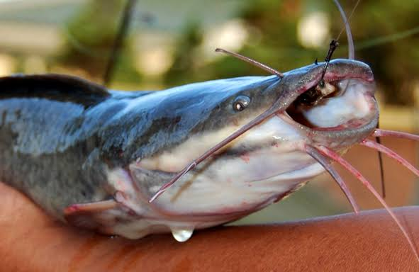
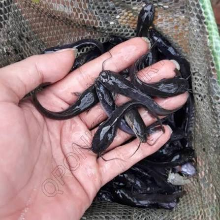
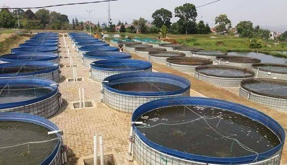
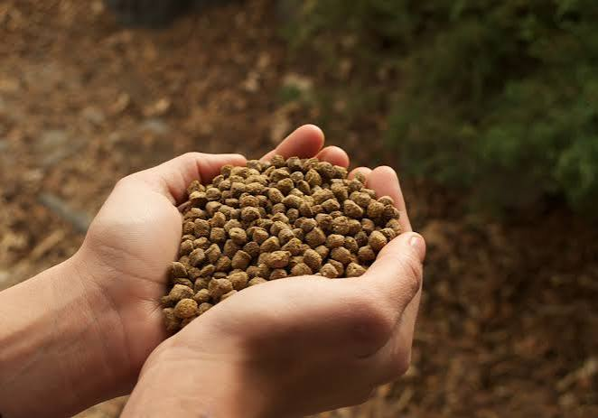

BUDIDAYA IKAN LELE
Menyediakan informasi seputar budidaya ikan lele, bibit berkualitas, pakan, dan hasil panen.
Lihat ProdukPRODUK KAMI
Kenali berbagai produk dan kebutuhan budidaya ikan lele.

Ikan lele untuk kebutuhan konsumsi sehari-hari.

Bibit ikan lele untuk memulai usaha budidaya.

Informasi kolam yang digunakan untuk pemeliharaan lele.

Pakan untuk mendukung pertumbuhan ikan lele.
Lele Jaya Farm merupakan website informasi peternakan ikan lele yang menyediakan informasi tentang produk, bibit, pakan, dan kegiatan budidaya ikan lele.
Ingin mengetahui lebih lanjut tentang produk dan budidaya ikan lele? Silakan hubungi Lele Jaya Farm.